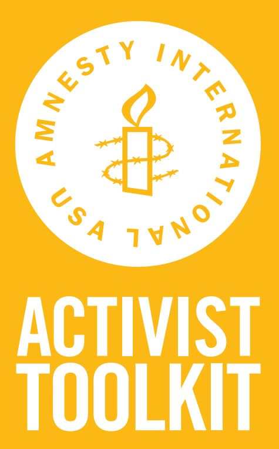
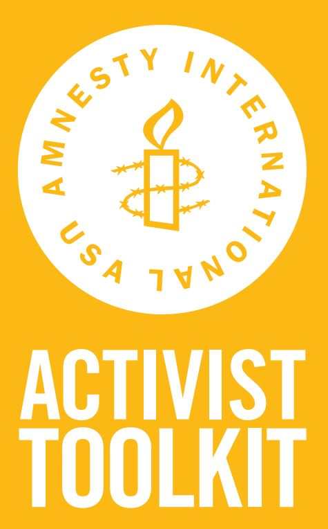

These are all great resources for starting your own activism and campaigns. Here are even more resources and instructionals for making an impact in your community: http://www.action.org/take-action/toolkits http://www.unicef.org/evaluation/files/Advocacy_Toolkit.pdf http://www.canva.com for creating flyers, presentations, images for social media and more for your campaigns. Good luck!